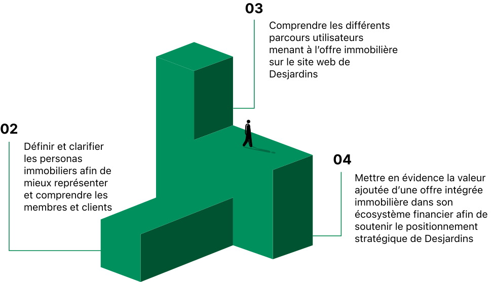
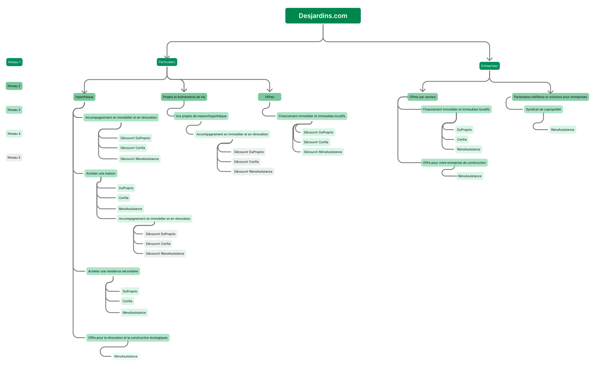
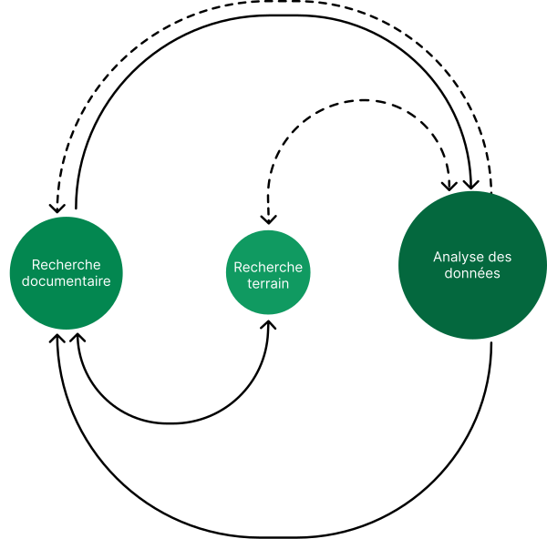
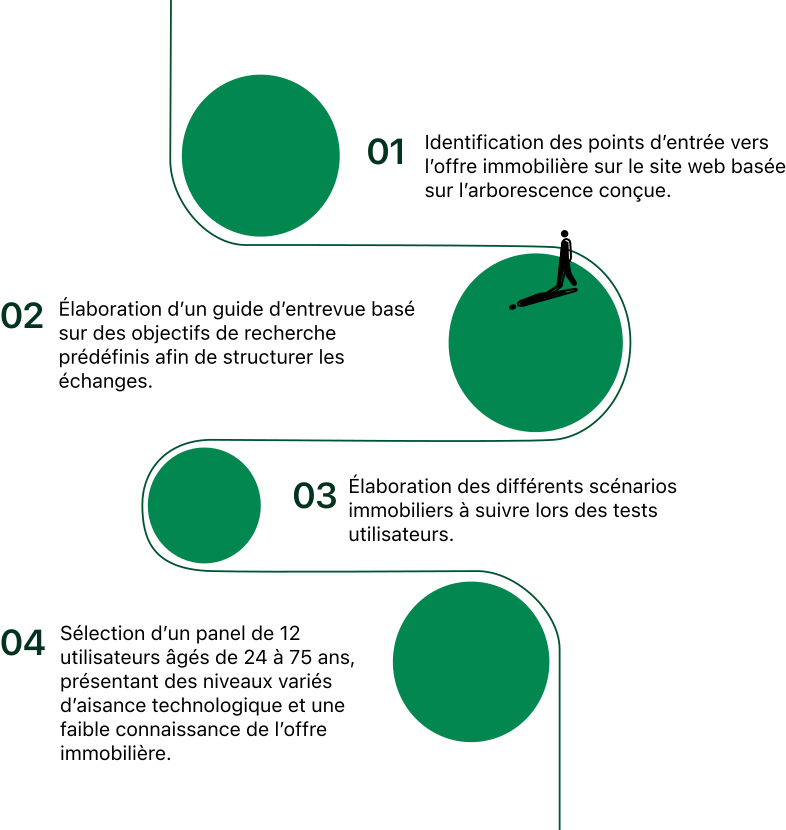
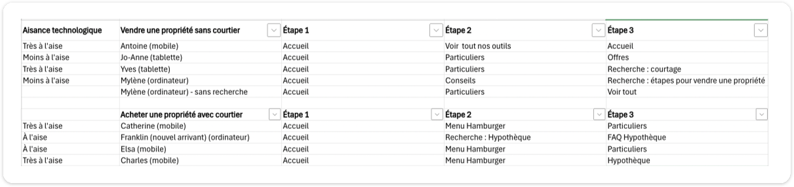
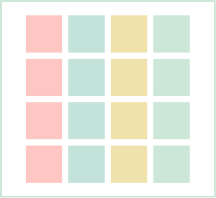
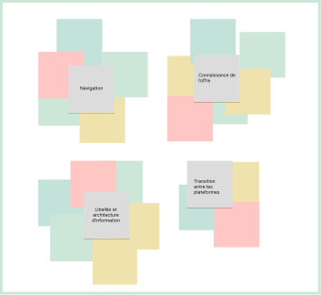
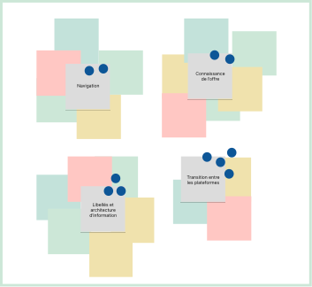

Comment rendre visible ce que Desjardins a construit en immobilier ?
Au cours des dernières années, Desjardins a élargi son positionnement en immobilier avec l'acquisition de DuProprio et RénoAssistance, ainsi que la création de Confia. Cet écosystème accompagne les membres à chaque étape de leur parcours immobilier, en complément des services financiers de Desjardins.
Malgré la richesse de cette offre, elle demeure peu visible et mal comprise. Les utilisateurs associent encore majoritairement Desjardins à ses services financiers, limitant ainsi la découvrabilité de son écosystème immobilier.
Objectifs principaux
Renforcer la découvrabilité et la valeur perçue de l'offre immobilière au sein de l'écosystème financier de Desjardins

Recherche préliminaire
01 Compréhension de l'écosystème Desjardins
Schématisation graphique de ses écosystèmes financiers et immobiliers
02 Analyse du site web mère
Arborescence identifiant les points d'entrée vers l'offre immobilière
01 Compréhension de l'écosystème Desjardins
Écosystème financier
Desjardins est un écosystème complexe : caisses, fédérations, filiales et offre en constante évolution. Une cartographie de l'ensemble a été nécessaire pour structurer notre compréhension et délimiter la portée du mandat.

Cliquer pour zoomer
02 Analyse du site web mère
L'analyse du site Desjardins nous a permis de construire une arborescence, d'identifier les points d'entrée de l'offre immobilière et de guider les scénarios pour les tests utilisateurs.

Cliquer pour zoomer
Construction des personas immobiliers
Les personas permettent de mieux comprendre l'état d'esprit, le contexte et les besoins qui influencent la navigation sur un site web ou l'utilisation réelle d'un produit (PRUITT et GRUDIN, 2003).
01 Recherche documentaire
Réalisation d'une recherche approfondie sur le marché immobilier au Québec
02 Recherche terrain et analyse
Entrevues et questionnaire
Analyse du questionnaire
03 Construction des personas
Élaboration de 15 fiches personas immobiliers basées sur les données recueillies.
Processus itératif
Notre démarche s'inscrit dans une approche itérative où les fiches de personas ont été progressivement consolidées, enrichies et ajustées tout au long du projet.
Définition d'un processus itératif
Il consiste à répéter des cycles de conception, test et révision pour améliorer continuellement un projet, un produit ou un service (MARTINS 2025).

01 recherche documentaire
Réalisation d'une recherche approfondie sur le marché immobilier au Québec, qui nous a permis d'analyser les différentes catégories d'usagers et créer des personas fidèles à la réalité.
Recherche de sources pertinentes et de qualité
Sources informationnelles
02 recherche terrain et analyse
Questionnaire
Répondu par plus de 50 personnes, le questionnaire a permis de consolider les personas grâce à des données réelles sur les habitudes de recherche, les attentes d'accompagnement et les services consultés.
Entretiens semi-dirigés
Des entrevues téléphoniques auprès de profils immobiliers ciblés (ex. locateur de local commercial, investisseur immobilier) ont été réalisées afin de mieux comprendre les personas plus difficiles à cerner et valider nos fiches.

Soutien à l'analyse du questionnaire en facilitant l'interprétation des données et l'identification d'insights pour enrichir les personas.
03 Construction des personas
Au total, 15 fiches personas ont été élaborées et couvrent une diversité de réalités résidentielles et commerciales, de besoins et d'étapes du parcours immobilier.
Aperçu anonymisé des personas
Voici un aperçu simplifié de deux de nos personas. Les informations présentées sont génériques pour des raisons de confidentialité. Pour plus d'informations, n'hésitez pas à me contacter :)


Pertinence des personas
La création de personas nous a permis de rendre explicites les hypothèses concernant les utilisateurs cibles liés à l'offre immobilière de Desjardins. Maintenant définis, ils servent de repères pour mieux aligner la poursuite de la démarche UX à l'interne et maintenir une compréhension commune au sein de l'équipe.
Démarche tests utilisateurs
01 Préparation à la recherche terrain

02 Réalisation des tests utilisateurs
Les tâches ont été formulées par projet immobilier plutôt que par la recherche d'une des acquisitions. Cela permet d'observer des parcours naturels vers l'offre immobilière sur le site web de Desjardins.
Ex : Vous souhaitez acheter une propriété et trouver le bon courtier pour votre projet. Comment procéderiez-vous pour trouver l'information ou l'accompagnement disponible sur desjardins.com ?
7 scénarios immobiliers testés
(achat, vente, rénovation, location, etc.)
Scénarios répartis entre les menus Particuliers et Entreprises
Testés sur mobile, desktop et tablette
Séances modérées de 30 à 60 minutes
12 utilisateurs âgés de 24 à 75 ans
03 Analyse de données
Cartographie des parcours
Après chaque test utilisateur, nous avons synthétisé les parcours dans une cartographie des points clés, des ressentis, des frictions et des opportunités afin de faciliter leur analyse.
Journey Synthesis
Les cartographies individuelles ont ensuite été fusionnées dans un Journey Synthesis afin d'identifier les tendances récurrentes et d'obtenir une vision d'ensemble des parcours utilisateurs.


04 Synthèse UX : transformation des données en recommandations actionnables
Diagramme d'affinité
En regroupant les observations, nous avons pu faire émerger les principaux freins à la découvrabilité et à la compréhension de l'offre immobilière. Ces insights ont ensuite guidé la formulation de recommandations adaptées aux besoins réels des utilisateurs.
Appui au regroupement des données ethnographiques (Post-its), permettant de faire ressortir des idées complémentaires aux nôtres.



Verbatims, notes d'observation et parcours utilisateurs
Classification des observations par thèmes émergents
Identification des tendances, besoins et opportunités d'amélioration.
Formulation de recommandations cohérentes, réalisables et directement alignés sur l'expérience réelle des utilisateurs et les objectifs du projet
Interprétation des constats et mise en lumière des problèmes de navigation à différents niveaux et de leurs causes
Curieux d'en savoir plus ?
En raison de la confidentialité du projet, certains livrables ne peuvent être diffusés publiquement.
Problématiques identifiées
Les principaux freins qui empêchent les utilisateurs de découvrir et de comprendre l'offre immobilière
Recommandations proposées
Des opportunités d'amélioration concrètes qui répondent aux besoins réels des utilisateurs
Fiches des personas
Présentation détaillée des personas créés pour représenter les segments clés de l'écosystème immobilier de Desjardins